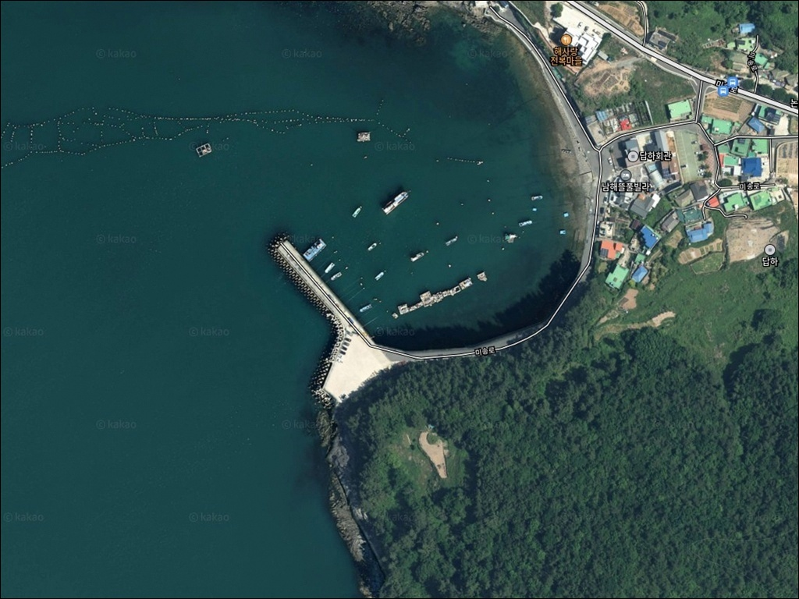
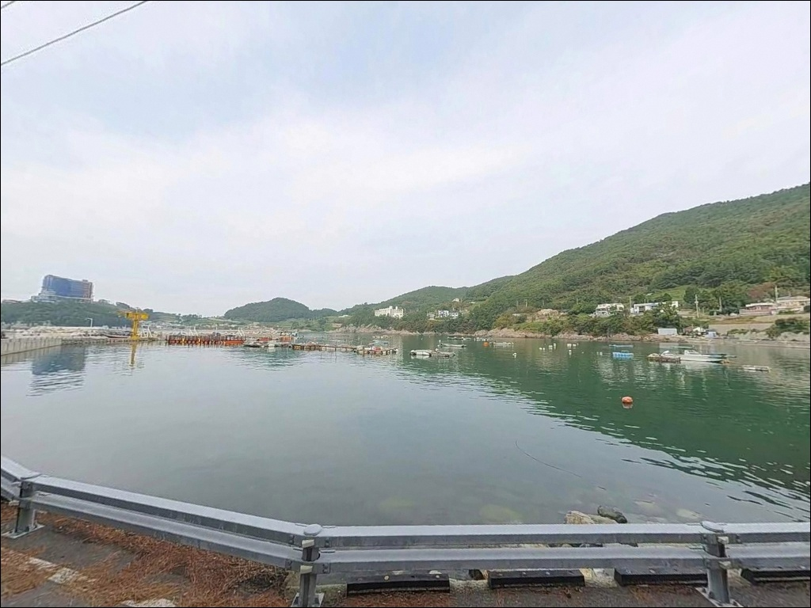
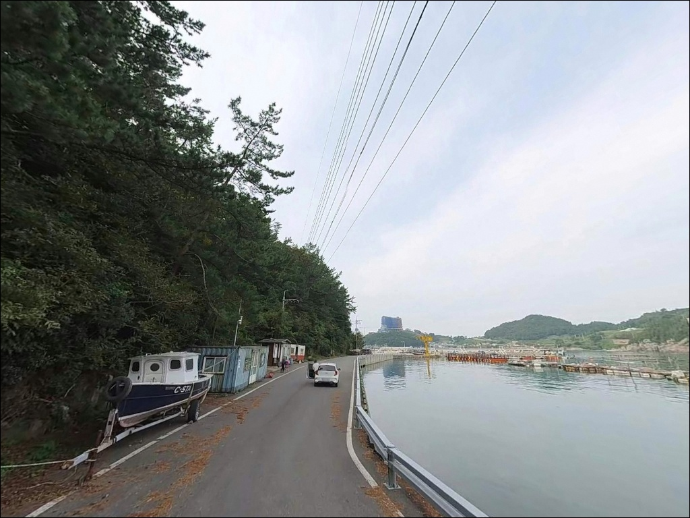
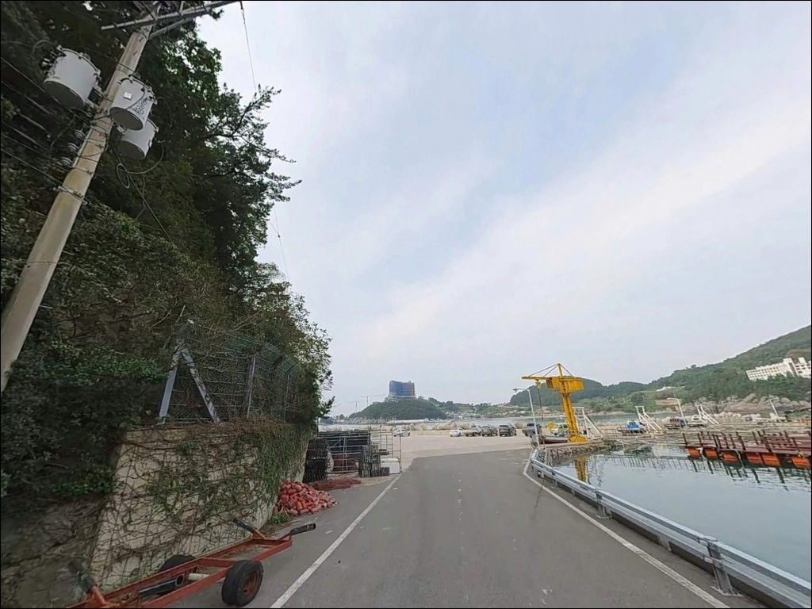
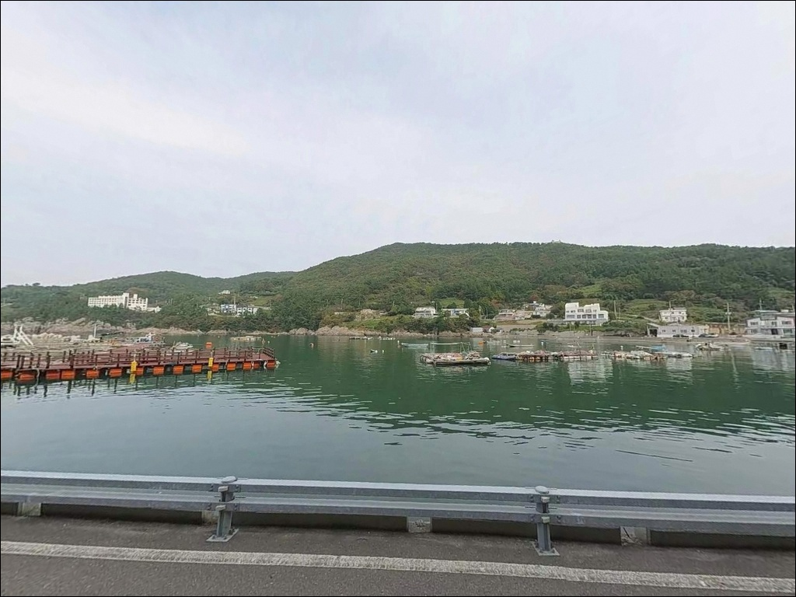
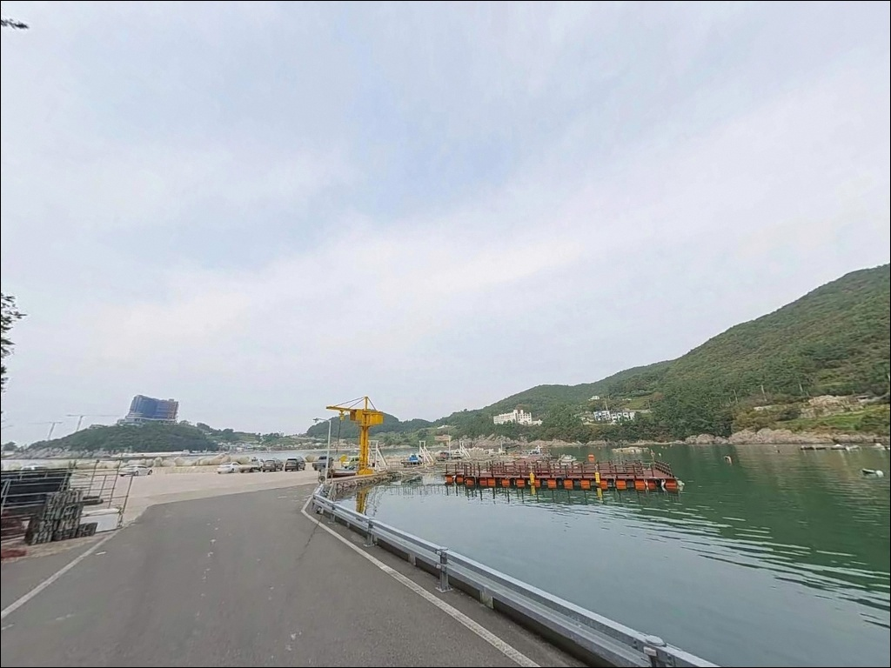
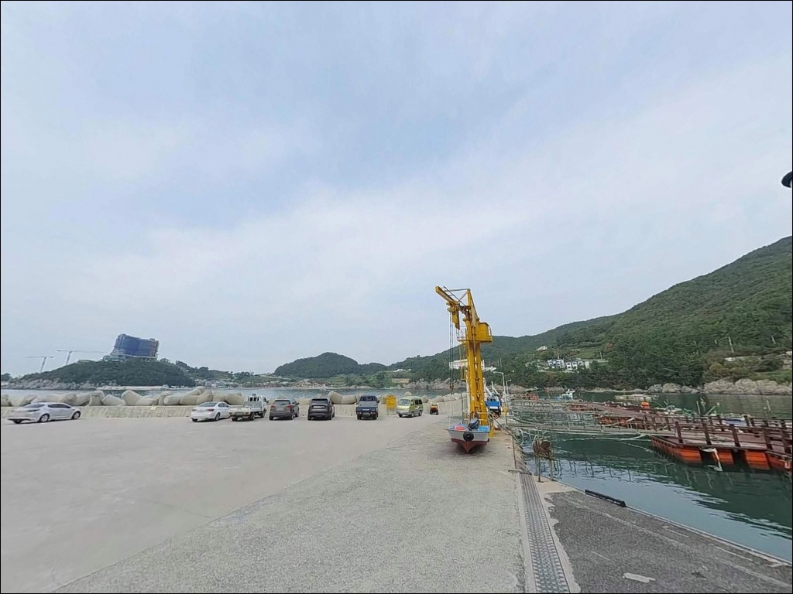
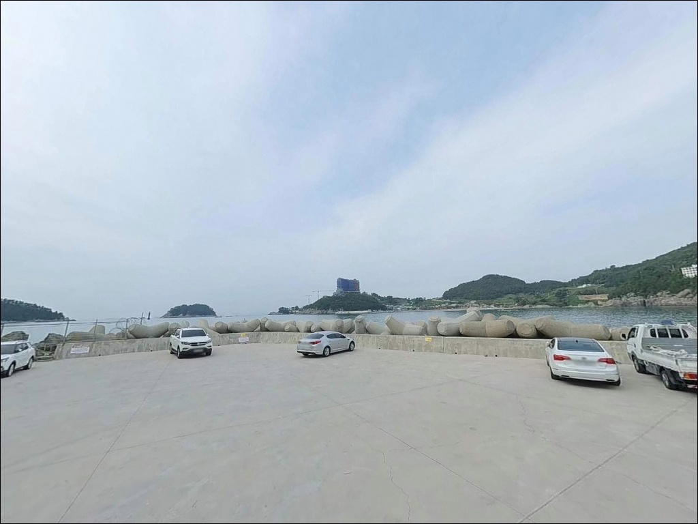
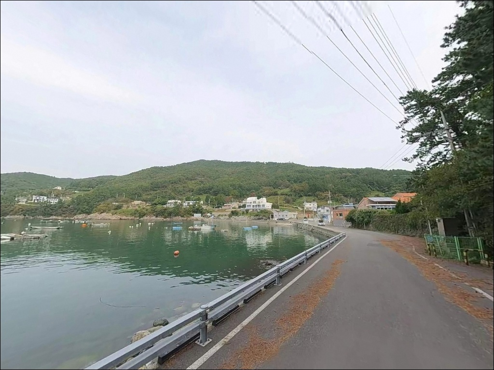

조류 센 사리 때 채비 밀리던 미송방파제, 조금 정조 타이밍에 노린 수심
이 페이지에는 광고(제휴 링크 포함)가 있으며, 광고 링크를 통해 구매하면 운영자가 판매 수익 또는 수수료를 받을 수 있습니다. 포인트 사진: 카카오맵 스카이뷰·로드뷰. 이 페이지의 지도·사진 이미지는 카카오맵의 실제 서비스 이미지와 다를 수 있습니다.


포인트 안내
미송방파제
경남 남해군 미조면 미조리 산 113-1
외해에 직접 노출된 소형 방파제에서
물때를 무시하고 진입하면
조류가 세지는 시간대에 어떤 채비도
컨트롤이 어려워집니다.
미송방파제는 방파제 끝단에서
수심이 빠르게 깊어지는 구조로,
입장 타이밍 판단이 낚시 성패를 가르는
포인트입니다.
남해도 최남단 미조면 해역에 자리한
이 방파제는 공식 명칭이 등록되지 않은
소형 시설입니다.
미조항에서 멀지 않은 거리에 있지만
온라인에 기록이 거의 없어,
아직 덜 알려진 조용한 포인트로
남아 있는 곳입니다.
이 글은 미송방파제의 진입 동선, 차박 여건,
낚시 방식 적합성에 집중합니다.
조황 단정이나 특정 어종 보장은
이 글의 범위에 포함되지 않습니다.

1. 진입 동선과 포인트 접근성
미조면 내부 해안도로인 미송로를 통해
차량 진입이 가능합니다.
이 일대는 2차선 해안 도로가 주된 접근 경로이며,
포인트에 가까워질수록 도로 폭이
승용차 1대 기준으로 무난한 수준으로 좁아집니다.
비포장 구간은 없지만 경사 구간이 포함될 수 있어
초행이라면 속도를 줄이고 진입하는 편이 좋습니다.
대형 SUV나 루프박스·캐리어를 장착한 차량은
방파제 직전 해안도로 구간에서
회차 여유가 충분하지 않을 수 있습니다.
출발 전 위성지도로 진입로를 미리 확인하고,
회차 공간이 부족할 경우를 대비해
후진 진출 여부도 함께 판단해 두는 것이
현실적인 준비 방식입니다.
주차는 방파제 진입부 소형 공터를
활용하는 방식이 일반적입니다.
1~2대 수용이 가능한 수준이며,
어선 접안 동선을 막지 않는 자리가 우선입니다.
해안선을 따라 형성된 도로변 노면도
보조 주차 공간으로 이용할 수 있습니다.

2. 차박 환경과 야간 체류 여건
미송방파제 일대는 민가 밀집도가 낮고
야간 통행이 거의 없는 편입니다.
가로등은 제한적으로 존재하는 수준이라
완전한 항구형 조명이 아닌 어둠이 유지되는 환경이며,
개인 조명 장비는 필수입니다.
주차 공간이 협소한 구조라
차박을 메인 목적으로 삼기에는
현장 여건을 사전에 확인해야 합니다.
외해 직결형 방파제 특성상 동풍·남풍 계열의 바람에
취약한 구조이므로,
기상 예보에서 풍향과 파고를 먼저 확인하고
바람이 강한 날은 체류를 피하는 편이
안전합니다.
낚시 후 조용히 하룻밤 머무는 용도로는
인적 없는 조용한 환경이 장점입니다.
다만 편의시설이 전혀 없고
응급 상황 발생 시 미조항 방면으로
이동하는 동선을 미리 파악해 두어야 합니다.


3. 주변 편의시설 및 인프라 현황
미송방파제 현장 반경 1km 이내에는
편의점·식당·낚시점 등 편의시설이 없습니다.
완전 자급 체제로 진입하는 것이
현실적인 준비 방식으로,
식수, 얼음, 낚시 소품, 간식 모두
출발 전에 갖춰야 합니다.
반경 3~4km 거리의 미조항 본항 방면으로
이동하면 편의점과 식당가를 이용할 수 있습니다.
차량으로 5분 안팎 거리에
보급을 해결할 수 있는 인프라가 갖춰져 있어,
미조항에서 보급을 완료하고 진입하는 동선이
가장 효율적입니다.
낚시점은 미조면 중심부에서
확인 후 이용하는 것이 좋습니다.
채비 소품이 부족한 경우
미조항 방면에서 미리 해결하는 편이
현장에서의 시간 낭비를 줄일 수 있습니다.

4. 진입 전 반드시 챙겨야 할 준비사항
미송방파제 방문 전에 가장 먼저 확인할 것은
물때와 기상입니다.
남해 미조 일대는 조류 흐름이 강한 해역으로,
사리 전후 시간대에는 외항 방향으로
채비 컨트롤이 어려워지는 수준까지 세집니다.
바다타임에서 미조면 기준 물때를 확인하고
조금 전후 또는 정조 타이밍을 노려
출발 시각을 맞추는 것이 기본 전략입니다.
외해 직결형 방파제라 기상 변화가
현장에 즉시 반영됩니다.
출발 당일 아침 기상청 해양기상 서비스에서
풍향·풍속·파고를 재확인하는 것이
헛걸음을 막는 기본 조건입니다.
암초·갯바위 혼합 지형 특성상
채비 손실이 잦은 편입니다.
여분 채비는 넉넉하게 챙겨야 하며,
테트라포트 구간에서 낚시할 경우
구명조끼 착용과 미끄럼 방지에
특히 주의가 필요합니다.
야간 낚시 시에는 헤드랜턴을
반드시 준비하십시오.

5. 외해 직결 구조가 만드는 낚시 여건
미송방파제의 핵심 지형 조건은
외해를 직접 마주하는 짧고 직선형 방파제 구조입니다.
내항이 거의 형성되지 않고
외항 비중이 절대적으로 높은 형태로,
방파제 끝단에서 수심이 빠르게 깊어집니다.
방파제 외항 끝단 기준 수심 5~10m 안팎으로
추정되며, 내항 측은 3~5m 내외입니다.
방파제 주변으로 암반과 갯바위가 혼합된
해안선이 이어지고,
수중 여가 발달한 지형이라
어류의 은신처와 먹이 활동 구간이
자연스럽게 형성되어 있습니다.
테트라포트 구간이 일부 있어
끝단 공략 시 테트라 접근이 필요한 구조입니다.
외해와 맞닿은 남해 남단 특성상
계절에 따라 회유성 어종의 유입이 반복되는
해역 패턴을 가집니다.
조류가 흐르는 타이밍에 방파제 외항 방향으로
채비를 날리는 방식이 이 포인트 구조와 가장 잘 맞으며,
최신 조황은 출조 전에 반드시
미조항 방면 조황 검색을 먼저 해보시는 편이 좋습니다.


6. 포인트 지형에 어울리는 낚시 스타일
이 포인트에서 가장 지형과 잘 맞는 방식은
원투낚시입니다.
방파제 끝단에서 외해 방향으로 장타를 구사하면
수심이 깊어지는 구간과 조류 영향권을
동시에 공략할 수 있습니다.
다만 바닥이 암초가 많아 채비 손실 위험이 있어
봉돌 종류와 채비 손실 여분을 미리 준비하는
것이 이 포인트 운용의 기본입니다.
에깅도 이 포인트 구조에 맞는 방식입니다.
암반과 수심 급변 지형은 두족류가 접근하는
환경 조건을 갖추고 있으며,
방파제 외항 측과 갯바위 경계 구간을
집중 탐색하는 방식이 유효합니다.
저녁부터 야간 시간대가 에깅 운용에
유리한 편입니다.
루어낚시는 볼락 라이트게임이 이 지형과 잘 맞습니다.
방파제 테트라포트 틈새와 암초 경계를
소형 지그헤드 채비로 천천히 탐색하는 방식으로,
야간 입장 시 주로 활용하는 스타일입니다.
찌낚시는 내항 측 조류가 잔잔한 구간에서
저부력 채비로 수중 여 주변을 흘리는
방식이 어울립니다.

7. 대안 포인트와 플랜 B 동선
미송방파제 조류나 기상 여건이
여의치 않을 때 첫 번째 대안은
미조항 북방파제입니다.
차량으로 3~4km 거리이며,
공영주차장이 방파제 바로 옆에 있어
접근성이 안정적입니다.
내항과 외항 선택이 가능하고
수심과 조류 모두 이 권역에서
가장 안정적인 포인트입니다.
같은 미조면 내 방파제를 찾는다면
노구항 방파제도 선택지입니다.
미조면 송정리에 위치하며 거리는 약 3~4km입니다.
소형 방파제 구조로 미송방파제와 지형 조건이 유사하며,
노래미·도다리·볼락·문어 계열이
기대되는 해역 패턴을 가집니다.
낚시 여건을 더 넓게 확보하고 싶다면
미조면 일대에서 차량으로 약 9km 거리의
물건방파제를 대안으로 삼을 수 있습니다.
남해 대표 방파제 낚시 포인트로
볼락과 감성돔으로 알려진 곳이며,
방파제 주변 수심 5~10m 구간이
루어와 찌낚시 모두에 적합한 구조입니다.

조용한 포인트를 먼저 발굴하고 싶은
낚시인에게 어울리는 자리입니다
온라인 기록이 거의 없는 무명 방파제를
직접 탐색하는 방식을 즐기는 낚시인이라면,
미송방파제의 외해 직결 구조와
수심 급변 지형은 충분히 흥미로운
조건을 갖추고 있습니다.
원투, 에깅, 볼락 루어를 두루 운용할 수 있는
지형 조건도 복수 스타일 낚시인에게
잘 맞는 포인트입니다.
반면 처음부터 조황이 보장된 포인트를
찾는 낚시인이나,
편의시설과 넉넉한 주차 공간을 필요로 하는
가족 단위 방문자에게는
미조항 북방파제나 물건방파제가
더 적합한 선택입니다.
물때 확인, 기상 사전 체크, 자급 준비—
이 세 가지를 갖추고 간다면
한적한 방파제 낚시와 조용한 차박을
동시에 즐길 수 있는 포인트입니다.